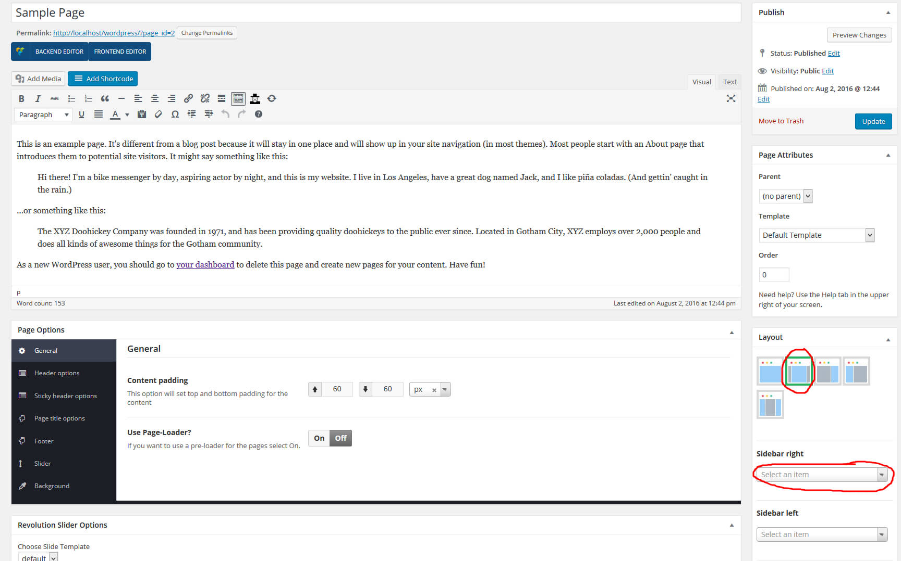
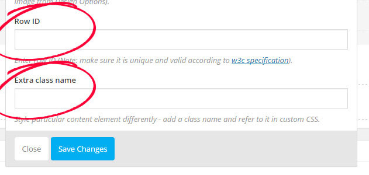
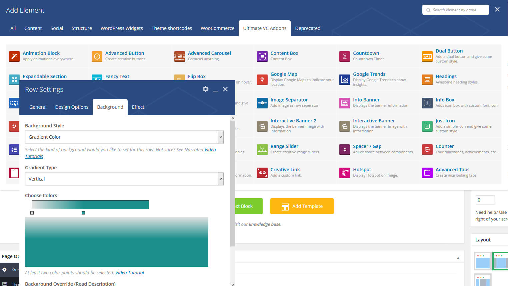

My Coach - Premium Wordpress Theme
My Coach Documentation
- Introduction
- Installation
- Theme Installation
- Plugin Installation
- Demo Content Import
- Widgets Import
- Theme Setup
- Logo Upload
- Menu Setup
- Header Setup
- Main Color Set
- Page Title
- Fonts/Typography
- Footer Setup
- Sidebars
- Widgets
- Page & Post Creation
- Creating Pages (Rows & Columns)
- Page Elements
- Page Settings
- Setting a Home Page
- Creating Posts
- Portfolio
- Creating Portfolio Items
- Creating a Portfolio Page
- Contact Page
- Creating Contact Forms
- Custom Contact Pages
- Plugins
- Visual Composer
- Ultimate Addons
- Revolution Slider
- Contact Form 7
- Really Simple CAPTCHA
- Woocommerce
- Theme Customization
- Child Theme
- Custom Styles - Global
- Custom Page CSS
- Raw JS on a Page
- Extra
- Updating My Coach
Welcome to My Coach Documentation
Thank you for purchasing My Coach Wordpress Theme! In this document you will find information on how to install, manage and update your theme, as well as create content, install plugins, import Demo data etc.Theme Installation
Once you purchase My Coach from Themeforest, you can download the theme package. After you UnZIP the package you will find the theme file in it - mycoach.zip. There are 2 ways to install your theme, both are described step by step below.Installation via Wordpress
Watch Video Tutorial
Step 1 - Login to your Wordpress Dashboard
Step 2 - Go to Appearance > Themes. Click the Add New button or Add new theme link. (check screenshot below)
Step 3 - Click on the Upload Theme button. Locate "mycoach.zip" and click Install Now.
Some webservers have a limitation for the maximum allowed size of files being uploaded to them and that value may be exceeded by the theme file. If that is the case you can receive an error that states: The uploaded file exceeds the upload_max_filesize directive in php.ini. or Are you sure you want to do this? Please try again. If you get any of these errors please increase the values of upload_max_filesize and post_max_size directives in your php.ini file to 20M or follow the Installation via FTP section described below.
Step 4 - Click on the Activate button to activate My Coach. Congratulations, you have now activated My Coach! You can now proceed with My Coach's Plugin Installation.
Installation via FTP
Step 1 - Log into your Hosting server using an FTP client (like FileZilla or WinSCP). Step 2 - Locate "mycoach.zip" that you found in your ThemeForest Package and unzip it somewhere on your hard drive. Once it is unzipped it will look like a folder named My Coach with all theme files in it. Step 3 - Locate your Wordpress installation and upload the theme directory My Coach (you unzipped in the previous step) into ../wp-content/themes/ in your Wordpress installation. Step 4 - Click on the Activate button to activate My Coach. Congratulations, you have now activated My Coach! You can now proceed with My Coach's Plugin Installation.Migration from another theme
If you are migrating from a different theme you need to make sure you resize the previously uploaded images in order to be able to reuse them with My Coach. Luckily you have a great tool for this - a plugin that does it automatically for you - install Regenerate Thumbnails plugin and run the resizing procedure.Plugin Installation
Once your theme is installed you will get a prompt at the top of your Dashboard that will ask you to install My Coach's plugins. The Theme requires only Breadcrumb NavXT, Netbee Core, Recent Tweets Widget, Revolution Slider, Ultimate Addons for Visual Composer and WPBakery Visual Composer. plugins in order to operate, but it recommends the installation of Contact Form 7, Regenerate Thumbnails, WP User Avatar, Widget Importer & Exporter, YITH WooCommerce Wishlist, YITH WooCommerce Zoom Magnifier and YITH Woocommerce Compare as well. Read more on the separate plugins in the Plugins section. Step 1 - Click on the Begin Installing Plugins links Step 2 - Select all plugins that you wish to install (Selecting all of them is recommended). Step 3 - Change Bulk Actions drop to Install then click Apply in order to install the selected Plugins. Step 4 - Make sure all required plugins are installed and Active so you can move on to importing Demo data or create your own pages/menu as well as setup your Theme, Menus, Widgets etc.Demo Content Import
Once you have installed all theme Plugins you can import the My Coach Demo Content.Install demo via "Netbee Demo Importer"
Watch Video Tutorial
Step 1 - Go to Theme Options > Demo Importer in your Dashboard.
Step 2 - Click on Import Demo button. This should take some minutes, depends your hosting. If takes more than 10 minutes then you should read Demo Import Troubleshooting. Make sure all requirements are with green bullet.
This will import automatically all theme demo data, menus, widgets and home slider without extra icons used.
Install demo via "Wordpress Importer"
Watch Video Tutorial Step 1 - Go to Tools > Import in your Dashboard. Step 2 - Click on Wordpress then Choose file and locate within the My Coach package you unzipped: Resources\Demo Content\content.xml. Click Upload and Import. This will install just theme demo content & menu items without sliders, widgets and extra icons used. Step 3 - Click on the drop down next to "or assign posts to an existing user" and select admin user in order to assign the imported data to your user then check the checkbox below Import Attachments and click on Submit. Importing the Demo Data along with all theme images may take awhile depending on your hosting provider, server load & location (up to several minutes) so please be patient and wait until the process finishes.Installing Missing Demo Icons
Step 1 - Click on the Ultimate > Icon Manager from your Dashboard. Step 2 - Click on Upload New Icons button. Step 3 - Upload icon pack/s from unzipped theme package under Resources/Icons Pack/... That's all, now all icons should be imported and ready to use.Errors on import
You should run the importer only once. Should any errors occur during the import you need to reset your WordPress before you run it again. Use this plugin to reset the WordPress database. You can also remove your imported files as a second import will duplicate those, go to your \wp-content\uploads folder and delete all subfolders created in there.Troubleshooting
If your Demo importing failed this is most likely due to your server resources being limited by its configuration - most commonly these are: max_execution_time and memory_limit . If working on a localhost increasing those limits is easy - simply head over to your PHP.ini configuration file, find where those directives are located and increase them to for instance:max_execution_time = 300memory_limit = 512Mset_time_limit(300);
define('WP_MEMORY_LIMIT', '512M');Widgets Import
Note! Just if you have imported demo content via "Wordpress Importer Tool you can import Demo Widgets. If you have imported via "Netbee Importer you don't need to import Widgets manually. Step 1 - Go to Plugins > Add New in your Dashboard. Step 2 - Find the "Widget Importer & Exporter" plugin via the "Search Plugins" field, install it and Activate it. Step 3 - Go to Tools > Widget Importer & Exporter. Click on Choose File and locate the Demo Widget Export file within the My Coach package you unzipped: Resources\Widgets\widgets.wie. Click Import Widgets and you are Done!Logo & Favicon Upload
Follow the steps below to upload your own logo and favicon to My Coach Theme. Step 1 - Go to Appearance > Customize > Site Identity in your Dashboard. Step 2 Upload Logo - Click on Select Logo button then upload your Logo Image file. Step 2.1 Upload Site Icon - Click on Select Image button then upload your favicon image file (must be square image). Step 3 Click on Save & Publish button. Watch Video TutorialSetting up your Menus
Your Menus are managed under the Appearance > Menus section. This is where you create/manage your custom menus and assign them to specific locations. Styling your main navigation takes place under Theme Options > Header and Appearance > Customize (read more on styling below).Set Demo Data Menu
If you have imported the Demo Data and you want to see the Demo data menu as your Main Navigation all you need to do is assign the My Coach Main Navigation to the Primary Menu Slot. Step 1 - Go to Appearance > Menus and click on the Manage Locations tab. Step 2 - Next to the Main Navigation slot select the My Coach Main Navigation from the drop down and click Save Changes Step 3 - Done! Go to your website frontend, you should now have the Demo Data menu assigned to your main navigation slot (in your header).Create a Menu
If you want to create your own Menu then assign it to a specific location (Main Navigation or add it via a Widget to the Sidebar or Footer for example) you can follow these steps. Step 1 - Go to Appearance > Menus and click on create a new menu. Step 2 - Name your Menu and click on Create Menu. Then use the tool to the left to add items to your menu and save it. Step 3 - Once you have created your menu you can assign it to a specific slot in the Manage Locations tab. By default the Primary Navigation area is available here. If you want to add Menus to your Sidebars/Footers you can do so under Appearance > Widgets by adding a Menu widget to the widget area of your choice then selecting the specific menu you want to use there.Style your Main Menu
Styling your main navigation takes place under Theme Options > Menu. Step 1 - Go to Theme Options > Menu. You can edit big set of your menu navigation options here, they are rather self explanatory. You should feel free to experiment with them and come up with the best output result for you.Create MegaMenus
Creating MegaMenus is very similar to creating a regular multilevel menu, in fact all you need to do to create a MegaMenu from a regular menu is just to turn the "Megamenu" checkbox on. Step 1 - Make sure the Mega Menu is checked so you can add mega menu columns and columns items. Every item you add under main megamenu item is transformed to column. Then everythign you drag and drop under each column is your regular menu item.Style your Mega Menu
Styling your mega menu takes place under Theme Options > Menu > Mega Menu. Here you can can manage mega menu background color, font color, font size, font family. You should feel free to experiment with them and come up with the best output result for you.Adding Icons to Menu Items
Adding icons from the Theme Icons to your Menu items is pretty easy. All you need to do is to click on Add Icon button. A pop-up window will open with icon list.Header Setup
This section describes how to setup and style your header, top bar and sticky header. Step 1 - Go to My Coach Options > Header in your Dashboard. Here you can manage you main Header options. Step 2 - Go to Theme Options > Header > Top Bar. Here you can manage the top part of the header (the one that contains the contact email and phone number as well as social icons in the Demo version of the Theme. Step 3 - Go to My Coach Options > Header > Sticky Header. Here you can manage the Sticky Header the header part when you scroll down on page.Main Theme Color
My Coach lets you set a global website color that most accent colors will inherit. Step 1 - Go to Theme Options > Styling in your Dashboard. Step 2 - Set primary color and other elements color, like links and button colors.Page Title
The My Coach Page Title section includes page title bar (under main header) settings. Here you can select page title position, activate/deactivate breadcrumps set a background color or image and much more. Step 1 - Go to My Coach Options > Page Title in your Dashboard.Setting Theme Fonts
My Coach Options provide a whole section dedicated to setting your My Coach theme Fonts. Follow the steps below assign to where you want them applied. Step 1 - Go to My Coach Options > Typography in your Dashboard. Step 2 - Select for each H tags font family and size also for pragraphs and body text. Note! Our DEMO pages may have custom headings made in Visual Composer we used custom fonts/sizes/colors. So you need to change them from each page. Once you have set all the fonts you need click on Save Changes.Footer Setup
My Coach Theme offers a flexible footer with up to 4 widget areas that you can customize anyway you please. Step 1 - Go to My Coach Options > Footer in your Dashboard. Step 2 - Modify your footer Theme Options anyway you please.Footer Widgets
Go to My Coach Options > Footer > Footer Widgets in your Dashboard. Here you can set footer widgets text color, link color, font family.Footer Copyright Bar
Go to My Coach Options > Footer > Copyright Bar in your Dashboard. Here you can set copyright text or whatever your want, add social icons, contact info or your custom message also you can enable "Back to top" icon.Sidebars
You can customize your global Sidebars and Post/Page Sidebar Layouts under the My Coach Options > Sidebar section. By default Pages have no sidebar globally and Posts have a right sidebar. You can change this by clicking on one of the other Layout icons (check screenshot below). This is also the area where you add new sidebars. Click on Add New sidebar under Create Sidebars, name your new sidebar and click Save. It will now be available for your to edit and appear under the Widgets area (check next section - Widgets).Overwriting Layouts for Specific Pages/Posts
You can overwrite the global sidebar layouts on a per Post/Page basis while editing your Page/Post under the My Coach Layout Settings.  Check the next Widgets section to see how to add custom Widgets to your Sidebars.Widgets
You can customize your sidebars and footers with My Coach easily by adding custom widgets to your widget areas (Sidebars/Footer columns). By default My Coach comes with the following widget areas: My Coach Default Sidebar, Footer Widget 1, Footer Widget 2, Footer Widget 3, Footer Widget 4, WooCommerce Sideba. Your Blog page and posts use the My Coach Default Sidebar by default. You can change the sidebar on a per Post/Page basis, for more on how to create new sidebars and how to assign different sidebars for specific pages check the previous section - Sidebars.Adding widgets
Step 1 - Go to Appearance > Widgets in your Dashboard. You will see your available Widgets to the left and your available Widget areas to the right. Your Custom Sidebars you have created under My Coach Options will also appear to the right as well as the Footer Widget Areas. Step 2 - Drag Any widget you want to add to a Widget Area from the left section onto the right and into the Widget Area box you are going for. Step 3 - You can further customize your widgets by clicking on them if they support extra customization.My Coach Specific Widgets
My Coach ships with a few custom widgets: My Coach - Custom Categories - Use it to display blog categories Sidebar/Footer column. My Coach Latest Posts - Use it to display a number of latest Posts into your Sidebar/Footer column. My Coach Download Button - Use it to create download buttons into your Sidebar/Footer column. My Coach Tabs - Use it to display blog comments, recent & popular posts arranged tab format into your Sidebar/Footer column. My Coach Flickr Photo Stram - Use it to display your Flickr photos into your Sidebar/Footer column.Creating Pages
Content management is a breeze with My Coach and it requires absolutely no coding skills. Using a highly customized version of the Visual Composer plugin the theme offers a user friendly Drag'n'Drop interface for easy page creation and editing. Follow these simple steps to create a Page with My Coach: Step 1 - Go to Pages > Add new in your Dashboard. Add a Title to your Page (top field). Step 2 - Switch to Backend Editor if you are currently under Classic Mode (button below Title field). Step 3 - Start adding page content by clicking on the Plus button or Add Element. Step 4 - The Add Element Popup appears, click on the first element in order to add a new Row to your page. A Row is a main building block of a page, you can split your Rows into Columns, place various elements into your rows, set Row Backgrounds, effects etc. Step 5 - Once you have the new Row added to your page you can split that Row into Columns in order to organize elements nicely in it. Once you split your Row into column you can start adding different Page Elements into your columns. If you want to edit your Row/Column Settings click on the small Pen icon (top right corner of the Row/Column). You can also Duplicate your Row with the Icon (duplicate icon) next to it or Remove the Row/Column with the icon to the right (trash bin icon).
Row Settings (General)
Step 1 - Click on the Edit Row button (Pen icon, top right of the Row). You will see the Row Settings Dialog popup. Step 2 - Set your Row stretch setting. Default will have your Row to follow your regular wrapper content width and the content within the Row to go into the center. Select Stretch Row if you want your Row to go full width on your screen and the content to go into the center along with the regular wrapper content width - useful when you want content in the center but you want a full-width background of your row. Select Stretch Row and Content if you want your Row to go full width on your screen and the content to go flow full width as well outside of the regular wrapper content width but with some padding to the sides - useful when you want content to flow full width of your screen and you want a full-width background of your row. Select Stretch Row and Content (no paddings) if you want your Row to go full width on your screen and the content to go flow full width as well outside of the regular wrapper content width with no padding to the sides - useful when you want content to flow full width of your screen and you want a full-width background of your row. Please experiment with all of these options after you set a Background color to your Row and add some elements to your Row's columns in order to understand how they work. Step 3 - Full height row?Check this option if you want your Row to automatically stretch to your screen's height. If checked you can also pick the Content Position in a dropdown below. Step 4 - Use video background?
Check this option if you want to apply a Youtube Video background to your Row. If checked you should also enter the Youtube Video URL below. Step 5 - Set your Parallax setting.
Selecting an option here different than None will let you set a background image to the Row with Parallax Effect on Scroll. You can either upload a new image or set one from your Library. The difference between Simple and With Fade is in that With Fade adds an extra Fade Out effect to your Row content on user scroll (content fades out once Row is scrolled down). Step 6 - Optional ID and Class. You can add those if you want to target this specific Row in you CSS or your Javascript code. 
Row Settings (Design Options)
Click on the Edit Row button (Pen icon, top right of the Row). You will see the Row Settings Dialog popup. Then Click on the Design Options tab. In this section you can customize your Row's Design Options (Margin, Padding, Border, Background). Step 1 - Modify this Row's basic Margins. By Default the Bottom Margin of a Row is 35px so if you leave the bottom margin out it will default to 35px, should you have a no bottom margin - simply add a "0" value in the bottom Margin field. Make sure you leave out the side Margin fields empty as those values are controlled by your layout. Step 2 - Set your Row borders. After setting the border widths in the fields of the box model to the left (Top border, right border, bottom border, left border) you need to select a Border Color (to the right) as well as Border Style (Click on Theme Defaults dropdown and select the border style from the dropdown). Step 3 - Set your Row Paddings (top, right, bottom, left). Make sure you leave out the side Padding fields empty as those are taken care by the layout. If you want to you can add side paddings to your Columns instead. In the example displayed we have set a top padding of 200px and a bottom padding of 200px. Step 4 - Select your Row's background settings. Pick a Color or/and Background Image (and) Background Style. Make sure you pick "Cover" if you want the Row to be fully covered by a single background image.Row Settings (Background) - Ultimate Addons for VC Plugin
In order to use this tab you need to have the Extended via Ultimate Addons Plugin (ships with the theme) installed. More on installing the plugin - check your Plugin Installation section. For more info on the plugin check the Plugins section in this documentation.Once you click on the Background Tab you can pick one of the background options available.
Single Color - Set your Row Background Color. You have that option in the default Row settings (Design Options tab) but you can use this setting too. The Background Override option allows you to overwrite your default Row's width, picking "Full Width" for example will stretch your Row to the Full Width of the screen, something you can also manage via your Row Settings (General tab) > Row stretch setting.
Gradient Color - Set a custom color gradient as your Row Background. You can select numerous colors to build the gradient, then select the Gradient Type and there you have a pretty gradient as your Row background without having to use images. The Background Override option allows you to overwrite your default Row's width, picking "Full Width" for example will stretch your Row to the Full Width of the screen, something you can also manage via your Row Settings (General tab) > Row stretch setting.
Image / Parallax - Set your Row Image background & Add some Cool effects to it. Apart from the Regular Image background this section provides you with the option to add Horizontal/Vertical/Custom Parallax effects to your background image as well as add an Interactive Multi-Image Parallax background to your Row.
Parallax Style - Pick the Parallax Style you wish to use
Background Image(s) - Pick the Image(s) you want to use
Background Image Repeat - Image Repeat property
Background Image Size - Image Size property
Scroll Effect - Pick how you want your background to behave
Background Image Posiiton - Image position property
Parallax Speed - Parallax Speed (0-100).
Background Image Posiiton - Image position property

The Background Override option allows you to overwrite your default Row's width, picking "Full Width" for example will stretch your Row to the Full Width of the screen, something you can also manage via your Row Settings (General tab) > Row stretch setting.
YouTube Video - Set a Youtube Video as a background for your Row.
Since Visual Composer version 4.6 you no longer need the help of Ultimate Addons Plugin in order to create Youtube video backgrounds. Simply head back to General tab and set your video background there as default VC functionality is preferable.
Place your Video URL, then enter the rest of the self explanatory options if you wish. The Background Override option allows you to overwrite your default Row's width, picking "Full Width" for example will stretch your Row to the Full Width of the screen, something you can also manage via your Row Settings (General tab) > Row stretch setting.
 Hosted Video - Set a self hosted Video as a background for your Row. Place your Video URLs once you upload them via the Media Library, then enter the rest of the self explanatory options if you wish. The Background Override option allows you to overwrite your default Row's width, picking "Full Width" for example will stretch your Row to the Full Width of the screen, something you can also manage via your Row Settings (General tab) > Row stretch setting.
Hosted Video - Set a self hosted Video as a background for your Row. Place your Video URLs once you upload them via the Media Library, then enter the rest of the self explanatory options if you wish. The Background Override option allows you to overwrite your default Row's width, picking "Full Width" for example will stretch your Row to the Full Width of the screen, something you can also manage via your Row Settings (General tab) > Row stretch setting.
Row Settings (Effect) - Ultimate Addons for VC Plugin
In order to use this tab you need to have the Extended via Ultimate Addons Plugin (ships with the theme) installed and you need to have a Non-Default Value set under the Row Settings - Background Tab. More on installing the plugin - check your Plugin Installation section.
This Tab provides you with an extra arsenal of cool effects for your Rows. Apply custom Parallax effects to the Row Content (move and fade it), add Row Color/Pattern Overlays, add graphical Separator Borders & Hide Row options.
Easy Parallax - If enabled, the elements inside row - will move slowly as user scrolls.
Fade Effect on Scroll - If enabled, the the content inside row will fade out slowly as user scrolls down.
Enable Overlay - Add Color (including Alpha-Transparency) or/and Pattern overlays to your Row.
Seperator - Add cool Separators for your Rows, check Home > Section Borders page in the Demo to see an example.
Managing Columns
Once you have the desired number of columns in a Row you can manage each Column's individual settings by clicking on the Toolbar icons of that specific Column. The Plus Icon adds an element to the top of the Column, the bottom Plus Icon adds an elemnt to the bottom of the Column. The Trash Bin icon removes the Column. Access the Column Settings by clicking on the Pen Icon.Column Settings - Design Options
Click on the Edit Column button (Pen icon, top of the Column). You will see the Column Settings Dialog popup. Then Click on the Design Options tab. In this section you can customize your Column's Design Options (Margin, Padding, Border, Background). Step 1 - Modify this Column's basic Margins (top, right, bottom, left). Leave out the Margins empty if you don't want to overwrite the default layout values. Step 2 - Set your Column borders if you want any. After setting the border widths in the fields of the box model to the left (Top border, right border, bottom border, left border) you need to select a Border Color (to the right) as well as Border Style (Click on Theme Defaults dropdown and select the border style from the dropdown). Step 3 - Set your Column Paddings (top, right, bottom, left). It's a good idea to always add 30-40px of bottom padding to your Columns so that they look nicely spaced out in responsive mode instead of being crowded. Step 4 - Select your Column's background settings. Pick a Color or/and Background Image (and) Background Style. Make sure you pick "Cover" if you want the Column to be fully covered by a single background image.Column Settings - Responsive Options
Click on the Edit Column button (Pen icon, top of the Column). You will see the Column Settings Dialog popup. Then Click on the Responsive Options tab. In this section you can customize your Column's Responsive behavior and overwrite its width. For example you can force this Column to change its Width in Tablet View or hide it in Phone View.Adding/Editing Page Elements
Adding Page Elements to your Page is pretty straightforward. First you need to have created a new page, added a Row to it and defined your Row Columns (read more in the previous section). Step 1 - Click on one of the Plus Icons within the column you want to add a new element to. Step 2 - The Page Elements dialog will appear, click on the element you want to add to your Column/Row. Step 3 - The Element Settings Dialog of the Element you are adding appears. Customize your element anyway you please, then click Save. Step 4 - Your element is now in the Column you added it to. Once you hover your newly added element you will see a small popup that let's you manage it. You can do the following with your elements: Move - Drag your element via the Direction Icon to move it around within the Column,Row or Page. Edit - Click on the Pen Icon to edit your Element's properties. Clone - Click on the Copy Icon to duplicate your Element. Delete - Click on the Trash Bin Icon to remove your Element.
Manage My Coach Page Settings
My Coach features custom settings for your pages that you can set globally under Theme Options (My Coach Options > General in your Dashboard - read more in the My Coach Options section) and individually on a per Page basis in your Edit Page screen under the My Coach Page Options section (the section will be above or below your Visual Composer editor section). You can set the following Options for the Page you are currently editing: General - Overwrite the Default content padding and preloader (set in Theme Options) for this page. Header options - This is the area that you can overwrite header style, menu attributes and top header bar settings. Also set the transparent menu. Page Title - This is the area that contains the Page Title and Breadcrumbs, right below the header. Footer - Overwrite footer settings set under Theme Options, activate/deactivate entire footer, copyright bar & activate "footer fixed effect" Slider - Here you can page top slider. You don't need to add a Visual Composer element to add below the menu a Slider Revolution item, you just create a slider then select it from here. Background - Choose content background color.Select your Website's Home Page
Once you have created/imported some Pages to your Wordpress installation you can select one of the pages to be your Home Page. Here's how to do that: Step 1 - Go to Settings > Reading in your Dashboard. Step 2 - Under Front page displays select A static page (select below) from the drop down. Step 3 - Select the Static Page you want to set as your Home Page under the Front page: dropdown.Creating Posts
Creating Posts with My Coach is pretty straightforward. Follow the steps below to create your own Posts now. Step 1 - For simple blog post go to Posts > Add New in your Dashboard.For portfolio post go to Portfolio > Add New in your Dashboard.
For story post go to Story > Add New in your Dashboard.
For event post go to Events > Add New in your Dashboard. How to add a event post type Video Tutorial Step 2 - Enter your Post Title at the top of the Edit page. Step 3 - Enter your Post content. Step 4 - Select Post Format, Category, Tags and other meta data if you want it. Step 5 - Upload a Featured Image for this Post. Step 6 - Click on Publish/Update button.
Creating Portfolio Items
My Coach ships with a Portfolio custom post type that lets you feature your work in style. To create your Portfolio items follow the steps below: Step 1 - Go to Portfolio > Add New in your Dashboard. Step 2 - Enter your Portfolio Item Title at the top of the Edit page. Step 3 - Proceed with entering your Portfolio Item content. If you want to use the Visual Builder (Visual Composer) for your Content and you don't see the Dark Blue VC button (Backend Editor/Classic Mode) head over to Dashboard > Visual Composer and under Content types check the Portfolio post type as well. Step 4 - Select Portfolio Item Category, Post Template and other meta data if you want it.
Step 5 - Upload a Featured Image for this Portfolio Item.
Step 6 - Click on Publish/Update button.
Gallery - To add a image gallery to your Portfolio Item create a row/column and search for "Responsive Slider or Gallery" element. Then you can set gallery images, type and set width&height.
Video - To add a video to your portfolio item is simple like adding a gallery element, just search for "Video element and add it to visual composer row/column, add Youtube or Vimeo video URL.
Step 4 - Select Portfolio Item Category, Post Template and other meta data if you want it.
Step 5 - Upload a Featured Image for this Portfolio Item.
Step 6 - Click on Publish/Update button.
Gallery - To add a image gallery to your Portfolio Item create a row/column and search for "Responsive Slider or Gallery" element. Then you can set gallery images, type and set width&height.
Video - To add a video to your portfolio item is simple like adding a gallery element, just search for "Video element and add it to visual composer row/column, add Youtube or Vimeo video URL.

Portfolio Categories
You can manage Portfolio Categories via the Dashboard > Portfolio > Categories section or straight into the Portfolio Item Editor. While editing a Portfolio Item find the Portfolio Categories section to the right, check the boxes of the existing Categories you want to add this Portfolio Item to or add a new Category below.Creating a Portfolio Page
Creating a portfolio Page is quite easy with My Coach. Follow the steps below the create a Classical Layout Portfolio Page with a category Filter dropdown in the top right corner. Step 1 - Go to Pages > Add New in your Dashboard. Step 2 - Enter your Portfolio page Title. Step 3 - Search in Visual Composer Elments for Portfolio element. Add it! Choose portfolio categories to display, set other settings. Save and you are Done!Creating a Contact Form
My Coach supports various web form plugins but recommends the use of Contact Form 7 plugin (+ Really Simple CAPTCHA plugin if you want to add Captchas to your forms). The theme ships with a style preset for the form elements that match My Coach's overall design. But you can customize by yourself forms design by checking Contact From 7 Documentation Step 1 - Make sure you have Contact Form 7 plugin installed, install it and Activate it if you haven't yet (+ Really Simple CAPTCHA plugin if you want to add Captchas to your forms). Step 2 - Create a new form - go to Contact > Add New in your Dashboard. Step 3 - Add your form name, then setup your form fields below using the dynamic web form builder. Find more general info on Contact Form 7 here. Step 4 - Add your form to your page using the Contact Form 7 element in your Editor. Also view this video tutorial how to add a footer form with contact info & background color or image.Creating custom Contact Pages
You can choose to create a totally custom Contact page by simply using your Page editor and adding a custom Form to the page. As you can see below these are just regular pages with custom elements added to them.Visual Composer - page builder plugin
Using a highly customized version of the Visual Composer plugin My Coach Wordpress theme offers a user friendly Drag'n'Drop interface for easy page creation and editing. Content management is a breeze with My Coach and it requires absolutely no coding skills.You get a Free regular license of Visual Composer - $33 Worth with the purchase of a Regular license of My Coach that is suitable for use on 1 website!
You will receive some notifications regarding registering the plugin, you don't need to active any license. Because you already have the plugin authorization.
Adding and editing Page Elements is pretty straightforward with Visual Composer, you will save tons of time on content creation and you can create highly customized page templates with no coding knowledge required.
Read more on managing your content in the Page & Post Creation section.
Ultimate Addons for Visual Composer plugin
This plugin extends your Row Element settings popup dialog with 2 extra tabs - Background and Effect. Read more on them in the Creating Pages (Rows & Columns) section. These tabs contribute to Visual Composer's default Row functionality with the ability to add Parallax backgrounds, Video Backgrounds, Custom Gradient Backgrounds, MultiLayer Parallax effect + Color & Pattern Overlays, cool Section Borders etc. Also plugin contains a lot of Visual Composer ElementsYou get a Free regular license of Parallax & Video Backgrounds for Visual Composer - $18 Worth with the purchase of a Regular license of My Coach that is suitable for use on 1 website!
You will receive some notifications regarding registering the plugin, you don't need to active any license. Because you already have the plugin authorization.
Revolution Slider plugin
Revolution Slider is the most popular Wordpress slider solution out there with tons of awesome features. It is an all-purpose slide builder that allows for showing almost any kind of content with highly customizable, transitions, effects and custom animations. Due to its visual oriented interface and countless options, Slider Revolution is suited for all!You get a Free regular license of Revolution Slider - $19 Worth with the purchase of a Regular license of My Coach that is suitable for use on 1 website!
You will receive some notifications regarding registering the plugin, you don't need to active any license. Because you already have the plugin authorization.
The Demo sliders are also included with the theme so you can import them and reuse them on your website. There's also additional information you can find regarding Revolution Slider on its official page. Revolution Slider plugin also has its own documentation that you can access here.
Importing Theme Revolution Slider Demos
Importing the Theme Revolution Slider Demos is rather easy. Once you have the plugin installed click on the Revolution Slider link in your Dashboard. Then click on the Import Slider button. You will find the Theme Slider Demos within the My Coach package you unzipped in: Resources/Sliders/. If you want to use all of them go ahead and import them all. It is advisable to import them all on your testing server so you can play around with them and modify them according to your needs. You can then export them and import them on your Live server.Updating your Revolution Slider Plugin
Updating your Revolution Slider plugin is rather easy, all you need to do is overwrite the current plugin version files with the latest ones provided within your Package. From your favorite FTP program, delete the folders/files in the following directory: wp-content/plugins/revslider/ Then replace them with the folders/files located inside the "revslider" folder that can be found inside the revslider.zip file from your package.Never uninstall/reinstall the plugin, as that would also delete your previously built sliders. Instead, as long as the following instructions are followed, any previously built sliders will be saved and still exist once the update process is complete!
If the My Coach latest version package doesn't include the latest Revolution Slider version feel free to contact us via our Profile Page Contact form (bottom right) in ThemeForest and simply ask for the latest version of the plugin and we will send it to you shortly after.
Contact Form 7 plugin
Contact Form 7 is a Contact Form creation plugin that is very flexible and easy to use. It manages multiple contact forms, plus you can customize the form and the mail contents flexibly with simple markup. The form supports Ajax-powered submitting, CAPTCHA, Akismet spam filtering and so on.Read more on how to Create your own Contact Forms a few sections up in Creating Contact Forms or find out more on the plugin official website.
Really Simple CAPTCHA
Really Simple CAPTCHA is a plugin that provides the option to add CAPTCHAs to your Contact forms. Once installed the plugin will add an extra form element that can be added to your Contact Form 7 forms - Captcha. Clicking on it you will be presented with the option to add 2 new fields to your form, a Captcha image and a Captcha input field. Enter IDs and Classes for both if you need to (for styling purposes) and click on Insert Tag. The 2 tags will be added to your form, place them wherever you wish in it and check your front end to ensure things look OK and your Captcha is generated properly. Read more info on the plugin on its official websiteCAPTCHA does not work; the image does not show up.
Really Simple CAPTCHA needs GD and FreeType library installed on your server. Ask your server administrator if they are installed. Also, make the temporary file folder writable. The location of the temporary file folder is managed by the instance variable tmp_dir of ReallySimpleCaptcha class. Note that the setting varies depending on the calling plugin. For example, Contact Form 7 uses wp-contents/uploads/wpcf7_captcha as the temporary folder basically, but it can use different folder depending on your settings.
Really Simple CAPTCHA needs GD and FreeType library installed on your server. Ask your server administrator if they are installed. Also, make the temporary file folder writable. The location of the temporary file folder is managed by the instance variable tmp_dir of ReallySimpleCaptcha class. Note that the setting varies depending on the calling plugin. For example, Contact Form 7 uses wp-contents/uploads/wpcf7_captcha as the temporary folder basically, but it can use different folder depending on your settings.
Woocommerce plugin
My Coach is fully compatible with Woocommerce so you can start your online shop with it in a matter of minutes. All you need to do is install Woocommerce plugin, setup your products and start selling!Install Woocommerce
To install the plugin go to Plugins > Add New, search for Woocommerce. Install WooCommerce - excelling eCommerce by WooThemes plugin. Once you do WooCommerce will ask you to Install Woocommerce Pages for you. Click on the button and you are ready to go.Import Demo Data
Dummy data for WooCommerce is located in a file called dummy-data.xml, which is located in the WooCommerce plugin directory. Once WooCommerce is installed, you can find it two ways: - Use your cPanel or FTP, go to 'wp-content/plugins/woocommerce/dummy-data' and locate the dummy-data.xml file. - Unpack or unzip the WooCommerce .zip file To import the Shop Demo data simply follow these steps once you have downloaded the dummy-data.xml file: Step 1 - Go to Tools > Import in your Dashboard. Step 2 - Click on Wordpress then Choose file and locate the dummy-data.xml you previously saved. Click Upload and Import. Step 3 - Check the box below Import Attachments and click on Submit. Importing the Demo Data along with all theme images may take awhile (up to several minutes) so please be patient and wait until the process finishes. Step 4 - Done! You can continue by editing your products/categories - Dashboard > Products and setting up your Woocommerce Theme Options (scroll down).Woocommerce Theme Options
My Coach has some custom Theme Options related to Woocommerce that will help you manage your Online store. Head over to Dashboard > My Coach Options > Woocommerce to explore them. Here's what you can customize within My Coach's Theme options as it comes to your Woocommerce shop: Shop layout - Your Woocommerce pages layout: No sidebar, Left Sidebar, Right Sidebar. Select sidebar - Select which sidebar (set in Appearance > Widgets) you want to use on shop page. Products per Page - How many products you want your product listing pages to show (Shop/Category etc.). Show Cart on Menu - Yes, just what it says. Shop Columns - This option allows you to set the number of products columns you want to have per page. Related Columns - This option allows you to set the number of products columns you want to have for related products. Up-Sells Columns - This option allows you to set the number of products columns you want to have for up-sells products. Enable YITH wishlist - This option enable the Wishlist button on product hover & product page. Enable YITH compare - This option enable the Compare button on product hover & product page.Woocommerce Item Settings
Single product layout - Your Woocommerce product layout: No sidebar, Left Sidebar, Right Sidebar. Select sidebar - This option allows you to select the sidebar of the single product page. Reviews - This option allows you to choose if you want to show or hide the product reviews on the listing page Product price - This option allows you to choose if you want to show or hide the product price on the listing page.Child Theme
My Coach Wordpress Theme comes with a Child Theme ready to be used.Simply install the mycoach-child.zip and activate the Child Theme just like a regular theme after you have installed My Coach.
What is a Child Theme?
A child theme is a theme that inherits the functionality and styling of another theme, called the parent theme. Child themes are the recommended way of modifying an existing theme. Child themes allow you to modify or add to the functionality of the existing parent theme.Why use a Child Theme?
Always use a Child Theme when modifying any theme files. This way you make sure a theme update will not wipe out any changes you have made to the files.
There are a few reasons why you would want to use a child theme: If you modify a theme directly and it is updated, then your modifications may be lost. By using a child theme you will ensure that your modifications are preserved.
Read more on Modifying your Theme and using Child Themes here.
Global Custom CSS
My Coach provides you with a useful way of adding Global CSS rules to your website without editing any files. Simply head to your My Coach Options > Styling > Custom CSS in your Dashboard and type in any CSS want to globally include into all your pages.Custom Page CSS (Custom CSS Settings)
My Coach provides you with a useful way of adding Custom Page CSS rules to your specific pages without editing any files. The CSS rules you add will affect only the current page which is very useful in case you want a particular CSS to take place only for a certain page. To add Page-specific CSS simply click on the CSS button above the Editor while editing a page and enter your CSS rules in the Page Settings Popup that appears.Raw JS on a Page
My Coach provides you with a way to add inline Javascript into your pages via the Raw JS page element. While editing a page add a new element to your page then select Raw JS. Once the Popup appears enter the Javascript code you want executed on your page and click Save. Done! Next time your page gets loaded in the front end the Javascript code you entered in your Raw JS element you added to the page will be executed.Updating My Coach
Updating My Coach is rather similar to installing the theme. Follow these steps to update your theme: Step 1 - Go to https://themeforest.net/user/yourusername/api_keys/edit. Step 2 - Generate a new API Key. Step 3 - Go to My Coach's Theme Options > Theme Update, add your Themeforest Username and Generated API KEY (Note! Not theme purchase license) the API KEY generated here: https://themeforest.net/user/yourusername/api_keys/edit. Step 4 - Go to your Wordpress Dashboard > Updates there you will find My Coach theme update, check it and hit Update button.Alternative Theme Update
Step 1 - Login to your Wordpress Dashboard Step 2 - Go to Appearance > Themes. Deactivate My Coach Theme by activating a different theme. Step 3 - Delete My Coach Theme, don't worry your content will not be lost. Step 4 - Upload the latest version of mycoach.zip and activate it (more info in the Theme Installation section).
When modifying any theme files it is always best to use a Child theme, thus your file changes wont be lost once you update your theme (check the Child Theme section for more).